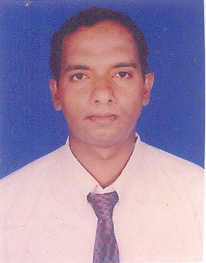

What do they need?
- They need food and shelter
- Facilities for schooling
- Medical care
- Love and parental care
What are we?
- Charitable organization working among the Aids affected People Drowntrodden
- Helping the Aids affected Children in multiple ways
What are we doing?
- providing holistic care for the Aids affected children
- providing food and shelter through our organization
- Providing medical facilities
- Providing basic education
- Providing higher education to the deserved
- Nurturing them in the love of Jesus and bringing up them in faith
What can you do?
- Take up the task of helping at least one child through an individual sponsorship
- Donate cloths playing as well as educational materials
- Introduce this ministry to your friends and concerned ones
- Visit and encourage this ministry
What we need urgently?
- Individual or group sponsorship for our organization
- Basic amenities for the growing organization
- Land and Building for the organization
About the Founder
GOOD SAMARITAN TRUST
No - 9/10B, Orient's Court,
Dhandeeswaram Main Road,
Velachery,
Chennai - 600 042.
Trust : 9884448642
John Mathew : 9043057025 / 9444680390

Merciful Thought: Born to live and born to win in the world. Live, let others live in the society. "Extend support to those Who are in need".